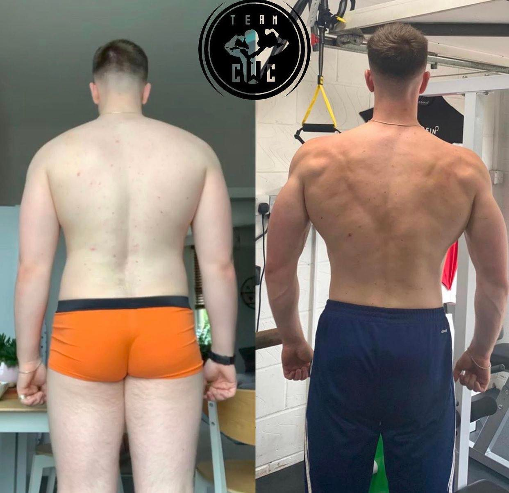

I’ll let the photos do most of the talking as they speak for themselves but I thought I’d provide some insight into Harry’s incredible transformation.
Harry’s main goal was fat loss with the overall goal of improving body composition whilst dramatically improving his form, strength and overall fitness levels whilst maintaining a high level of functionality in order to prepare for his future within the military.
Harry’s starting weight was just below the 100kg mark and we have taken his body weight down to 84kg over the past 48 weeks. We have spent several weeks at maintenance and several more weeks with implemented re-feeds to aid in both performance and recovery.
Could we have achieved this level of fat loss in half the time? 100%, but we took our time to avoid any negative impacts of “crash dieting” and the long diet allowed us to maintain a little bit more balance in Harry’s life.
Throughout this diet we spent the majority of the time above 2200cals and the next few weeks will involve a little bit of digging. Once finished we will reverse out relatively fast giving Harry the hard earned reward of more food, whilst maintaining a healthy relationship with his food.
It’s been a pleasure coaching Harry, he’s been a dream. I just wanted to say thank you to all my clients for helping me turn a passion and true love for coaching individuals into a income. Doesn’t get much better than that!
